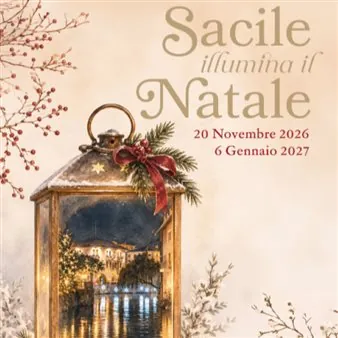

da ven 20 nov a mer 6 gen
Sacile illumina il Natale
Dal 20 novembre 2026 al 6 gennaio 2027 Sacile si prepara a vivere la magia delle feste con “Sacile illumina il Natale”, un ricco programma di iniziative: Concerti, spettacoli, mercatini, animazioni per bambini e appuntamenti legati alla tradizione animeranno il centro storico e…
 Indicazioni
Indicazioni
- Costi e prenotazioni
- Costo non indicato · Prenotazione non indicata
- Programma
- Programma da verificare. Apri la fonte ufficiale per orari e possibili aggiornamenti.
- In caso di maltempo
- Nessuna indicazione specifica pubblicata.
- Note
- Acquisito automaticamente dalla fonte.
L’EVENTO
Descrizione completa
Sacile illumina il Natale: concerti, spettacoli, mercatini, animazioni per bambini e appuntamenti legati alla tradizione animeranno il centro storico e i principali luoghi della città. La musica sarà tra i protagonisti del Natale sacilese, con un calendario che spazierà dalla classica al jazz, dalla musica corale al rock. In programma concerti al Teatro Zancanaro, al Teatro Ruffo, a Palazzo Ragazzoni e alla Fazioli Concert Hall, oltre a esibizioni e appuntamenti musicali nelle piazze e nelle chiese. Spazio anche alla danza e agli spettacoli teatrali.
Il 31 dicembre, dalle 22.30, il Capodanno in Piazza del Popolo sarà accompagnato dal concerto di Cindy & the Rock History, un viaggio tra i grandi successi del rock dagli anni Cinquanta a oggi. Le atmosfere natalizie si ritroveranno anche tra le bancarelle dei mercatini e le proposte dedicate all’artigianato e ai prodotti del territorio. Dal 20 novembre al 6 gennaio saranno presenti le Casette del Gusto nella corte di Palazzo Ragazzoni . Tra gli appuntamenti in programma, la mostra mercato “Natale è Casa” , dedicata alle decorazioni e alle idee per la casa, gli “Artigiani Serenissimi” con le loro proposte artigianali e il Mercatino dell’Avvento dell’8 dicembre, affiancato dalla tradizionale Rosa di Sacile . Non mancheranno gli appuntamenti con Sacellum e il Mercato Straordinario del 20 dicembre, per vivere il centro cittadino e lo shopping natalizio. Per i più piccoli, animazioni e laboratori ogni sabato e domenica in Piazza del Popolo e Piazza Manin. Tra gli appuntamenti più attesi, l’arrivo di San Nicolò il 5 dicembre, la tradizionale Posta di Babbo Natale il 24 dicembre e la festa della Befana il 6 gennaio. Anche la Biblioteca civica proporrà letture e laboratori a tema natalizio, con iniziative dedicate ai bambini e momenti di incontro. Il programma natalizio comprende appuntamenti che valorizzano le tradizioni e il patrimonio culturale della città, come la Fiaccolata di Natale sul Livenza del 20 dicembre e il Falò dell’Epifania del 5 gennaio. Non mancheranno spettacoli itineranti, giochi di una volta, iniziative solidali e momenti dedicati agli appassionati di astronomia, con le osservazioni del cielo a cura di ASA Sacile. In calendario anche appuntamenti teatrali e iniziative speciali, tra cui “Toys for Tots” e il tradizionale raduno dei Babbi Natale in moto. L’8 dicembre arriverà inoltre il Treno dei Presepi e dei Mercatini di Natale.
Durante il periodo natalizio, i negozi saranno aperti tutte le domeniche di dicembre, offrendo maggiori occasioni per dedicarsi agli acquisti e allo shopping in città.
Per agevolare cittadini e visitatori, sono inoltre previste quattro giornate di parcheggio gratuito: sabato 12 e 19 dicembre 2026 e sabato 9 e 16 gennaio 2027. In download il programma completo.
IL PROGRAMMA
Programma e orari
Appuntamenti raccolti dalle fonti elencate. Dove manca un orario, non è ancora disponibile in questa scheda.
Programma pubblicato
- Dal 2026-11-20 al 2027-01-06
INFORMAZIONI UTILI
Prima di partire
- Controllare la fonte prima di partire.
ORGANIZZAZIONE